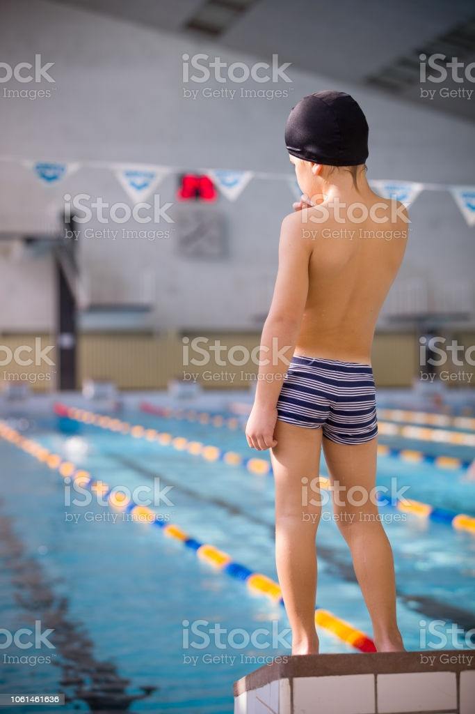
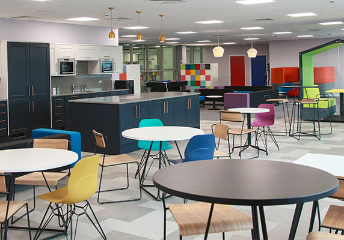

won first prize in inter school football competition
The school came first in the football competition with scoring 28 goals in 10 matches.

won first prize in inter school swimming competition
The school came first in the swimming competition with doing a 200 meter race finished in 180 seconds.

won first prize in inter school cooking competition
The school came first in the cooking competition by having baked the best cake and design.
-
New School Canteen

The food options and responsibilities to consider,canteens must be better organised and more efficient than they have beenin the past.Online menus with photographs of meal prepared, and detailed descriptions of their ingrdients hrlp both students and parents make the right nutritional choices.Each student or staff member who accsess the canteen could be provided with a School Canteen Account on their school website that keeps track of their previous meal choices and any dieatary requirements they may have.
-
Implemented Online Attendence Management System

In today's competitive world, with increasing working hours and less classroom time, teachers need edTech tools which help them manage precious class time efficiently. Instead of focusing on teaching, faculty members are often stuck with completing formal duties, for e.g. taking daily student attendance.
Manually taking attendance and registering it in files & musters makes the daily attendance a mundane task for the faculty and unnecessarily consumes classroom time.
To overcome such inefficient work processes, there are various school software systems available to speed up the attendance process and reduce manual work. An online attendance management system or digital attendance platform is one of them, which is developed to automate the daily attendance in schools. Additionally, it helps to maintain accurate records and generate summarized student attendance reports.
Attendance management system keeps track of daily attendance, working hours, breaks, login, and logout time. It prevents staff's time theft. An attendance management system integrates all attendance devices such as smart cards, biometric, and facial recognition devices in real-time.
MasterSoft's Student attendance management software allows schools of all sizes to manage various attendance requirements. This system makes it easy to create daily attendance reports, absentee lists, letters and other documents almost effortlessly. Student attendance system helps teachers to mark online attendance of students during class & reduce manual work. It is used to track student's attendance, absentee record, attendance history & other related documents. Student attendance software allows you to record & manage daily student attendance to speed up the daily attendance process.
Online attendance management system enables school administrators to record, manage & compile daily student attendance data. Along with student attendance, this software also allows teachers to generate 100% accurate student attendance reports.

.jpg)